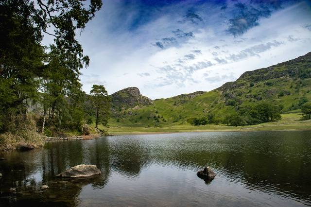
6 photographs
Blea Tarn
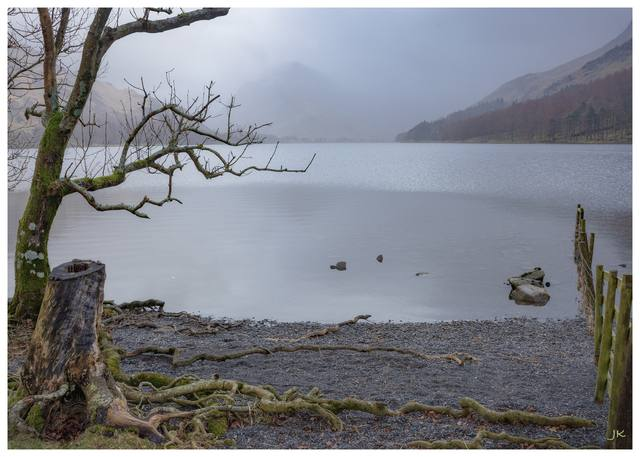
8 photographs
Buttermere
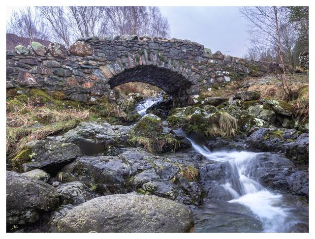
6 photographs
Derwent Water
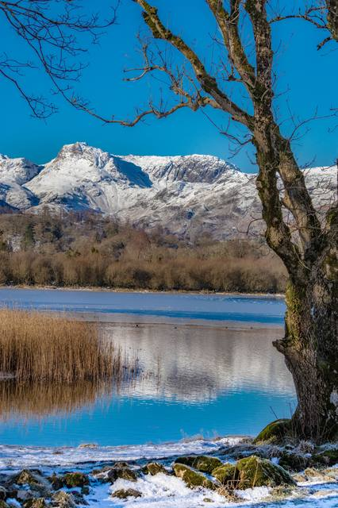
8 photographs
Elterwater & Langdale

6 photographs
Grasmere
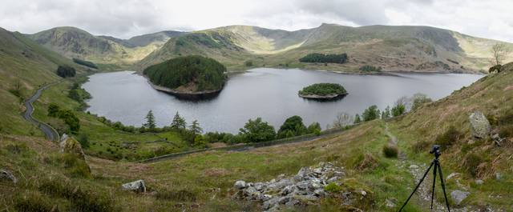
6 photographs
Haweswater
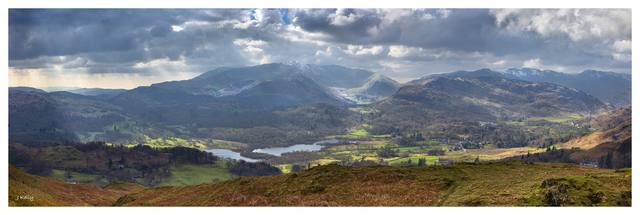
8 photographs
Loughrigg Fell
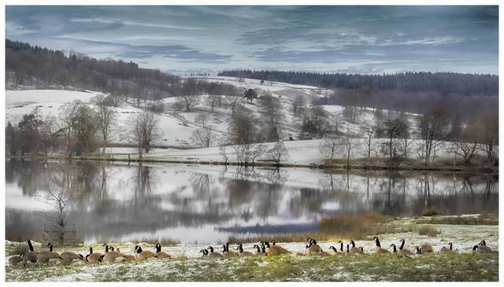
6 photographs
Lake District
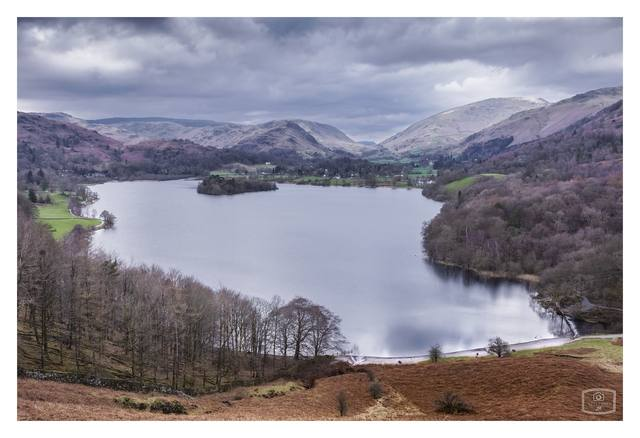
6 photographs
Rydal Water
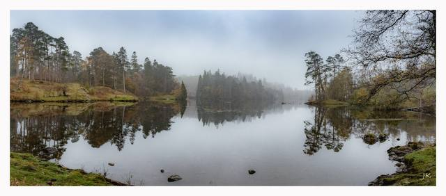
8 photographs
Tarn Hows
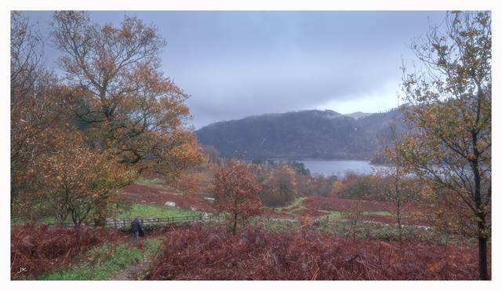
7 photographs
Thirlmere
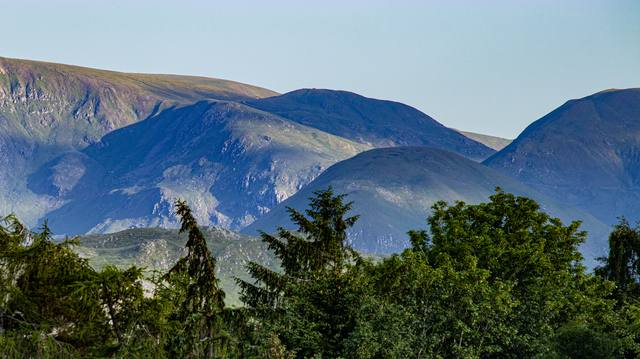
4 photographs
Ullswater
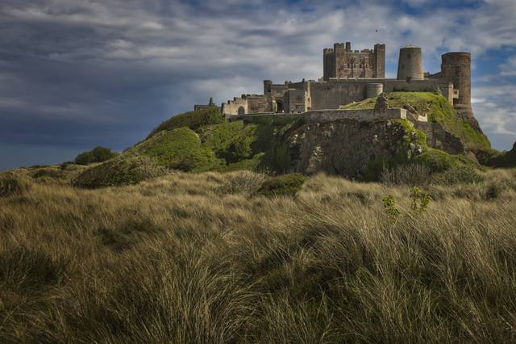
16 photographs
Northumberland
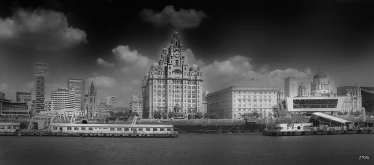
50 photographs
Black and White
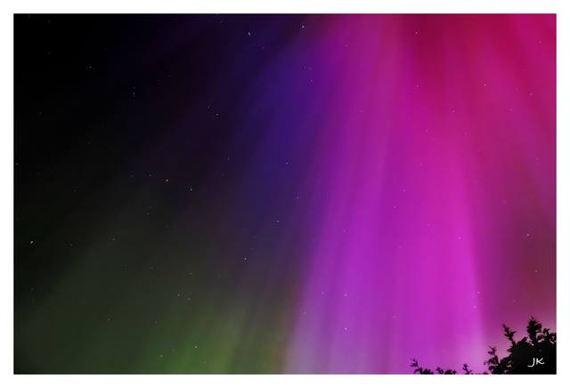
18 photographs
Northern Lights
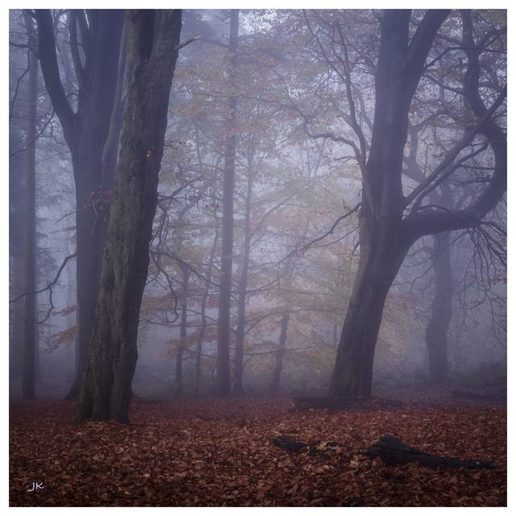
28 photographs
Spring Wood Whalley

37 photographs
Panorama

20 photographs
Bluebells
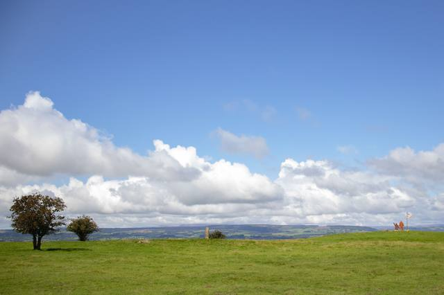
3 photographs
The Lone Tree
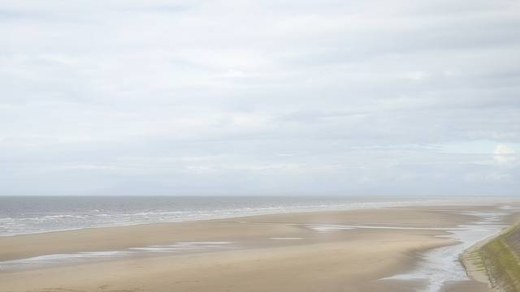
15 photographs
Sea Scapes
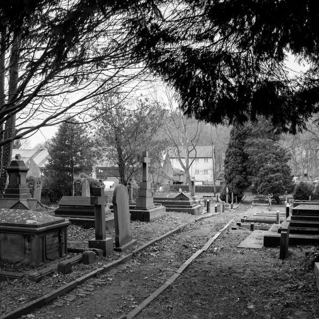
12 photographs
Whalley Village
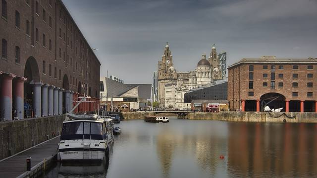
7 photographs
Liverpool
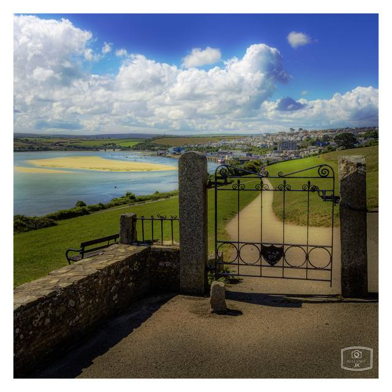
7 photographs
Padstow
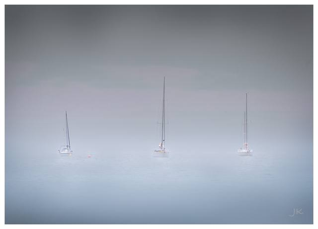
8 photographs
St Ives

5 photographs